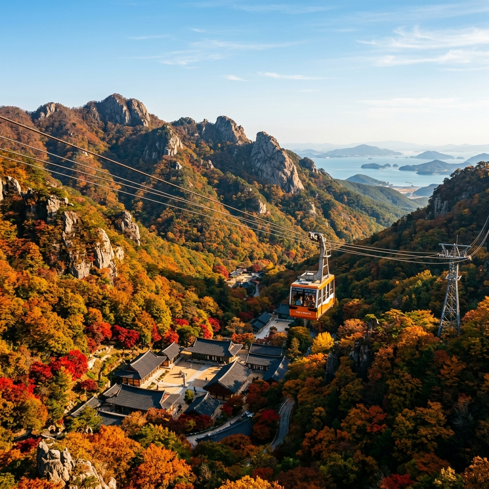
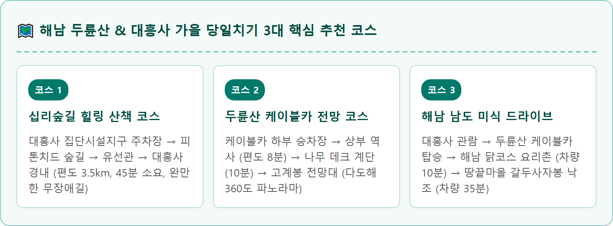
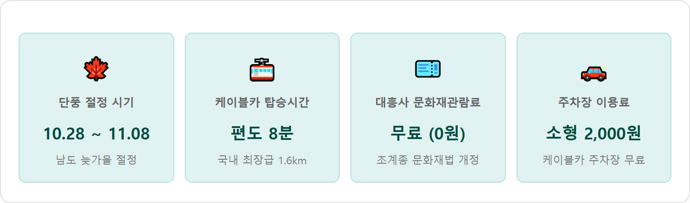
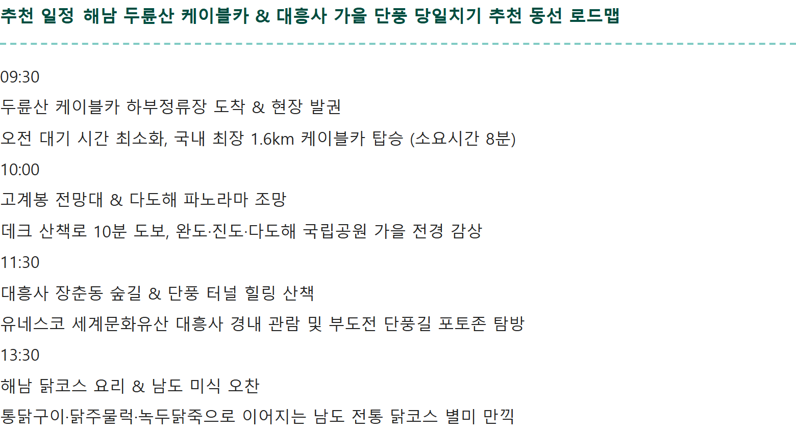
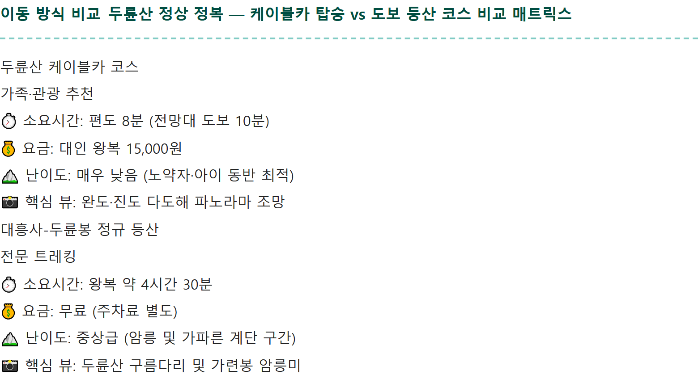
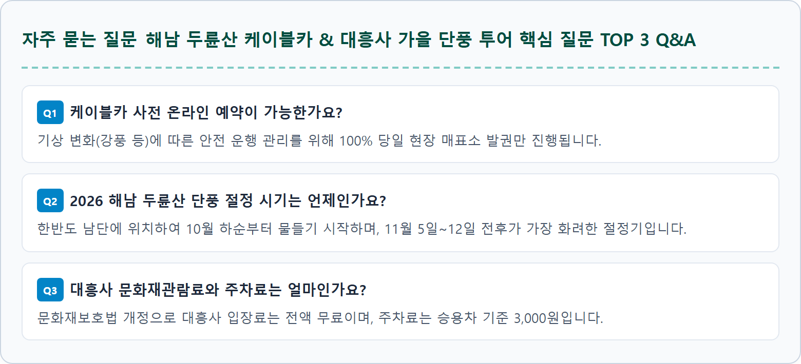

전라남도 해남군 삼산면에 위치한 두륜산(頭輪山, 703m)은 소백산맥의 남단이 다도해를 향해 치달리다 웅장하게 솟구쳐 오른 남도의 영산입니다.
가련봉을 주봉으로 두륜봉, 고계봉, 노승봉 등 여덟 개의 기암괴석 봉우리가 연꽃 꽃잎처럼 둥글게 둘러싸고 있으며, 그 아늑한 중심 분지에 서기 426년 신라 정관존자가 창건한 천년고찰 대흥사(大興寺)가 자리 잡고 있습니다.
두륜산은 한반도 최남단에 위치하여 내장산이나 지리산보다 단풍이 1~2주가량 늦게 시작됩니다. 강원도나 중부 지방의 단풍이 모두 지고 앙상한 가지만 남는 10월 말부터 11월 초순에야 비로소 울긋불긋한 단풍의 절정이 시작되어, 가을의 마지막 정취를 만끽하려는 전국의 여행자들에게 최고의 안식처를 제공합니다.
특히 유네스코 세계유산에 등재된 산사답게 초의선사의 다도(茶道) 문화와 추사 김정희의 친필 현판 등 깊이 있는 문화재가 오색 단풍과 어우러져 깊은 울림을 줍니다.
대흥사를 찾는 진정한 즐거움은 매표소에서 일주문까지 이어지는 '장춘동(長春洞) 십리숲길'을 온전히 걸어보는 데 있습니다.
'사계절 내내 봄날처럼 따스하고 푸르다' 하여 장춘동이라 불리는 이 숲길은 계곡을 따라 약 3.5km에 걸쳐 평탄한 흙길과 나무 데크 산책로가 조성되어 있습니다.
십리숲길 구간별 관람 포인트:
• 구림리 매표소 ~ 피톤치드 숲길 (도보 15분): 곧게 뻗은 삼나무와 편백나무 숲이 뿜어내는 상쾌한 피톤치드가 도심 속 스트레스를 말끔히 씻어줍니다.
• 유선관(전통 한옥여관) 일대 (도보 25분): 100년 역사를 지닌 우리나라 최초의 여관인 유선관 주변은 돌담길과 붉은 애기단풍, 계곡물이 어우러져 영화 '서편제'와 '장군의 아들'의 배경이 되었던 명소입니다.
• 연리근(連理根) 포토존 ~ 일주문 (도보 35분): 수령 500년 된 느티나무 두 그루가 뿌리를 한데 얽어 하나의 나무처럼 자라는 연리근은 사랑과 화합의 상징으로 여행객들의 발길을 멈추게 합니다.

등산에 자신이 없거나 어르신, 아이와 함께 두륜산의 장쾌한 풍경을 즐기고 싶다면 두륜산 케이블카가 최선의 선택입니다.
선로 길이 1.6km로 국내 최고 수준을 자랑하며, 지상에서 고계봉 상부 역사까지 시속 3.6m의 속도로 약 8분간 부드럽게 운행합니다.
| 구분 항목 | 대인 (중학생 이상) | 소인 (36개월 ~ 초등학생) | 운영 시간 및 예약 안내 |
|---|---|---|---|
| 왕복 요금 | 15,000원 | 11,000원 | 편도 발권 불가 (전원 왕복 티켓 기준) |
| 단체 할인 (30인 이상) | 14,000원 | 10,000원 | 경로우대·유공자·장애인 13,000원 |
| 운영 시간 | 08:30 ~ 17:30 (하절기 18:00까지 연장) | 기상 악화(강풍·낙뢰) 시 운행 일시 중단 | |
| 예약 방식 | 100% 당일 현장 선착순 매표 (온라인 사전 예약 불가) | ||


케이블카 상부 역사에 내린 후 잘 정비된 나무 데크 계단을 따라 약 10분 정도 오르면 해발 638m 고계봉 전망대에 도달합니다.
전망대 데크에서는 발아래로 불타오르는 두륜산의 오색 단풍 군락뿐만 아니라 영암 월출산, 강진만, 완도, 진도 등 남도의 명산과 푸른 바다가 파노라마처럼 펼쳐집니다.
특히 시야가 맑고 쾌청한 가을날에는 남쪽 바다 멀리 제주도의 한라산 정상 능선까지 육안으로 선명하게 조망할 수 있어 탄성을 자아냅니다.
금당천 계곡을 가로지르는 아름다운 돌다리를 건너 대흥사 경내로 들어서면 남도 불교 문화의 정수가 한눈에 들어옵니다.
• 침계루(枕溪樓): 계곡물을 베개 삼아 누워 있다는 뜻의 누각으로, 맑은 물에 비치는 붉은 단풍과 누각 처마의 곡선이 최고의 포토존을 이룹니다.
• 추사 김정희와 원교 이광사의 현판 대결: 대흥사 무량수각에 걸린 '무량수각(無量壽閣)' 현판은 추사 김정희가 제주도 유배 길에 남긴 힘찬 명필이며, 대웅보전의 편액은 조선 후기 서예의 대가 원교 이광사의 글씨로 서예 애호가들의 필수 감상 코스입니다.
• 일지암(一枝庵): 초의선사가 머물며 다산 정약용, 추사 김정희와 차를 나누며 교유하던 한국 차 문화의 성지입니다. 고즈넉한 대나무 숲길을 따라 15분 정도 올라가면 차 한 잔의 여유를 느낄 수 있습니다.

대흥사 방문 시 주차장은 위치에 따라 장단점이 극명하게 나뉩니다.
| 주차장 구분 | 위치 및 주요 접근성 | 주차 요금 | 추천 대상 및 주의사항 |
|---|---|---|---|
| 대흥사 집단시설지구 주차장 (하부 대형 주차장) |
매표소 입구 상가 단지 일대 대형 버스 및 500대 수용 |
소형 2,000원 대형 3,000원 |
적극 추천. 십리숲길(3.5km)을 온전히 걸어서 감상하려는 도보 여행자에게 필수 |
| 대흥사 일주문 안쪽 주차장 (상부 경내 주차장) |
일주문 바로 옆 소규모 공터 약 40~50대 수용 |
소형 2,000원 | 노약자, 영유아 동반 차량 전용. 성수기 주말에는 오전 9시 전 만차되어 진입 통제 |
| 두륜산 케이블카 전용 주차장 | 케이블카 하부 승차장 앞 약 200대 주차 가능 |
무료 (0원) | 케이블카 탑승객 전용. 주차 후 대흥사까지는 도보 약 15분 또는 차량으로 재이동 |
금강산도 식후경, 두륜산 산행과 대흥사 관람을 마친 후에는 해남 특유의 푸짐한 향토 음식을 맛보아야 합니다.
• 해남 닭코스 요리촌: 대흥사 입구 연동리 일대에는 전국적으로 유명한 닭요리 전문점들이 모여 있습니다. 토종닭 한 마리로 닭가슴살 육회, 매콤한 닭주물럭, 담백한 닭백숙, 그리고 고소한 녹두닭죽까지 4가지 코스가 차례로 나와 성인 3~4명이 배불리 즐길 수 있습니다.
• 산채비빔밥과 도토리묵: 가볍고 건강한 식사를 원한다면 집단시설지구 식당가에서 직접 채취한 신선한 산나물 8가지와 들기름을 듬뿍 넣은 산채보리밥 정식(1인 12,000원 선)을 추천합니다.

대중교통을 이용할 경우 해남종합버스터미널에서 군내버스를 이용하면 편리하게 이동할 수 있습니다.
• 해남터미널 → 대흥사행 군내버스: 오전 6시 40분부터 오후 7시 40분까지 30~40분 간격으로 하루 25회 이상 수시 운행합니다 (약 20분 소요).
• 두륜산 케이블카 입구 경유: 버스 기사님께 케이블카 방문을 미리 말씀하시면 케이블카 진입로 입구 승강장에서 하차할 수 있습니다.
• 택시 이용 시: 해남터미널에서 대흥사 매표소까지 약 15분 소요되며, 편도 요금은 약 15,000원 안팎입니다.
늦가을 남도 여행을 더욱 안전하고 완벽하게 마무리하기 위해 기억해야 할 실전 수칙입니다.
1. 일몰 시간 유의: 가을철 산간 지역은 오후 5시만 넘어도 급격히 어두워집니다. 십리숲길 하산은 늦어도 오후 4시 30분 이전에는 시작해야 합니다.
2. 가벼운 겉옷 준비: 지상과 케이블카 정상 고계봉의 기온 차는 4~5℃ 이상 나며 바람이 강하게 불어 체감온도가 매우 낮으므로 바람막이나 머플러를 준비하세요.
3. 사찰 경내 정숙 유지: 대흥사는 스님들의 수행 공간이므로 큰 소리로 통화하거나 음악을 트는 행위를 삼가고 차분히 가을 정취를 감상해 주시기 바랍니다.